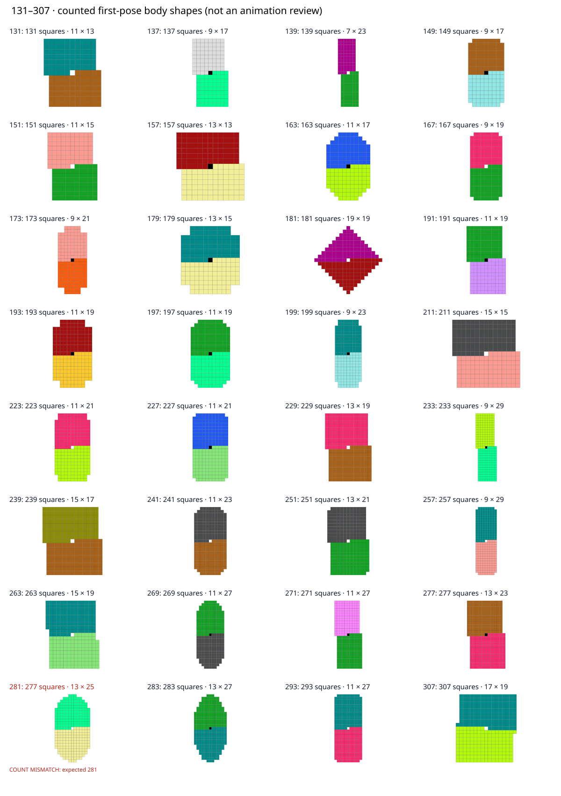

This lightweight viewer opens offline after you extract the whole ZIP. It reviews body geometry without loading the large animation bank.
Each square below represents a separately counted body block. Only the first static costume was checked. The281 discrepancy needs source review.
Source count table · All618 later prime shapes · Construction rules and limits
